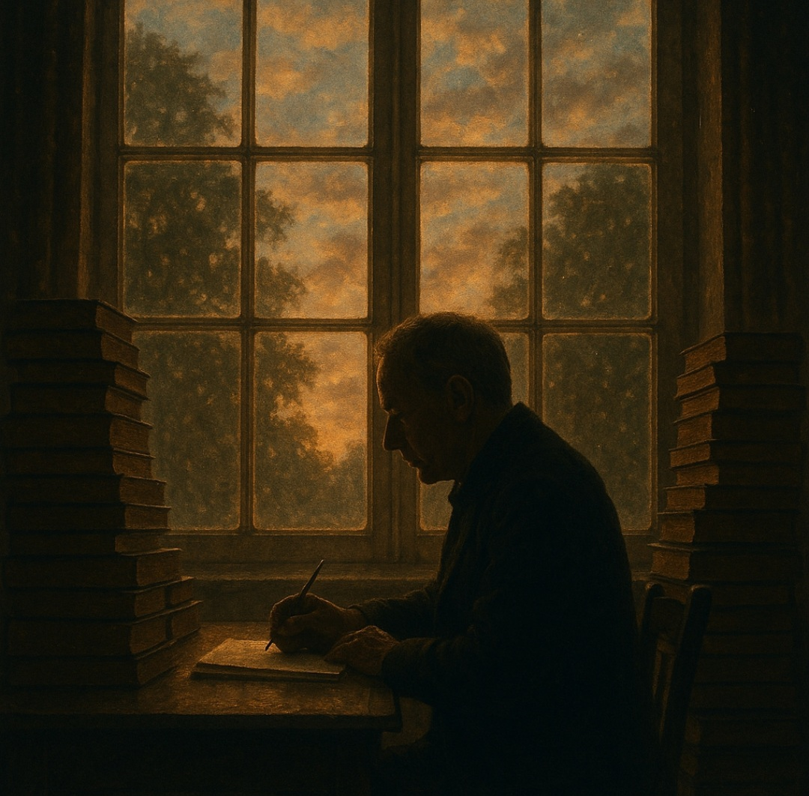

Je suis né en 1975 et j’ai grandi dans un petit village de Seine‑et‑Marne,
entre champs ouverts et forêts silencieuses.
Je n’ai pas suivi d’études littéraires et j’ai commencé à écrire tardivement,
le soir après le travail, d’abord pour vider ce que j’avais en tête,
puis pour rêver et faire voyager.
Marqué par la vie ouvrière, par la rudesse du réel et par les tensions sociales
de notre époque, j’écris de manière directe, sincère, ancrée dans le quotidien.
Mes récits s’inspirent de l’archéologie, des textes bibliiques et des intrigues policières,
avec toujours en filigrane le lien profond entre l’humanité, la terre et la nature.
Rêveur d’un monde plus juste et moins pollué, j’écris pour offrir un refuge,
une étincelle, un souffle. Pour rappeler que chacun porte en lui une histoire
qui mérite d’être entendue.